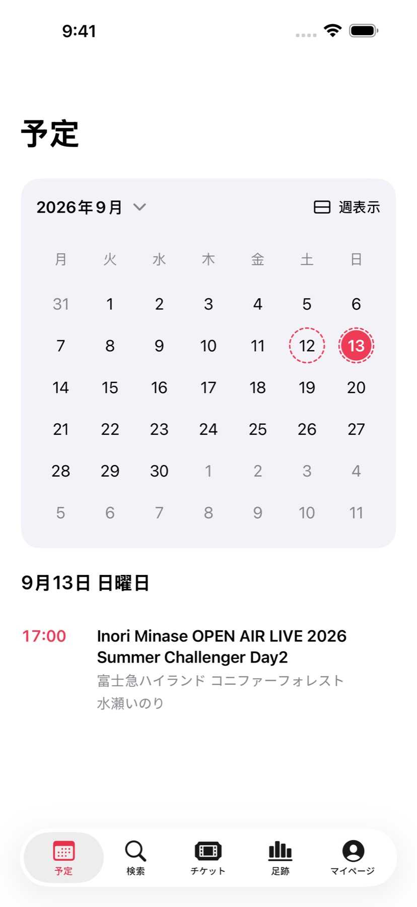
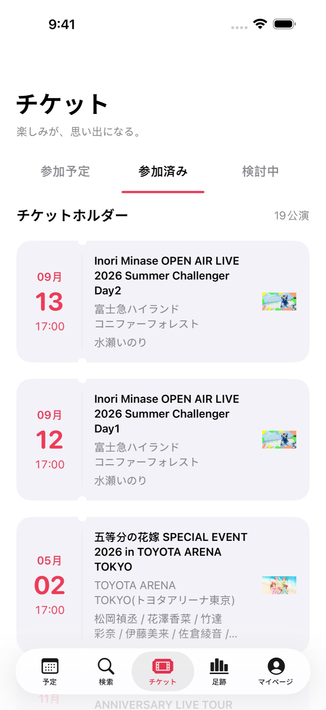
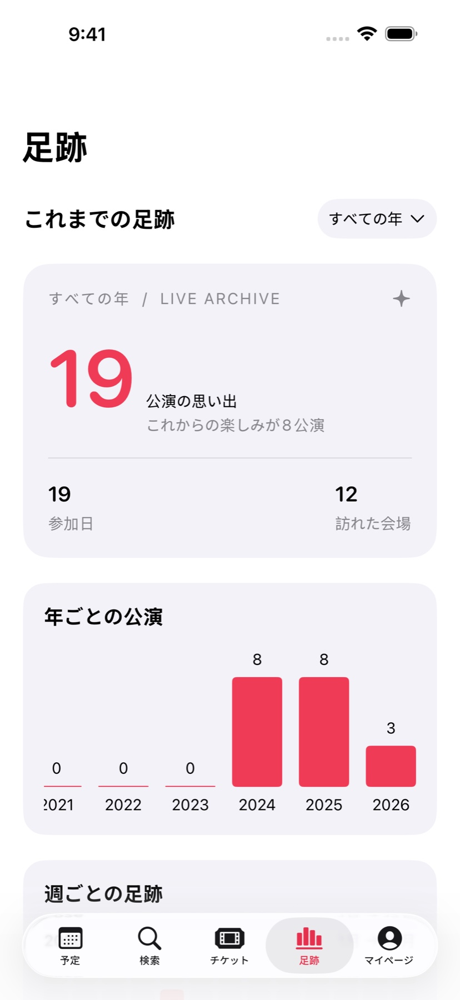

カレンダーに、
楽しみが増えていく。
月表示と週表示を切り替えて、公演のある日をひと目で確認。日付を選ぶと、その日の公演がすぐ下に。
月・週カレンダー / 日ごとの公演
次の公演を楽しみにする気持ちも、帰り道に残った余韻も。まちは、ライブの予定と記録をひとつにまとめるアプリです。
完全無料 · アプリ内課金なし / iPhone・iPad / iOS 17 以降

楽しみな日が、ひと目で。
アプリの実画面です。参加状況はデモ用の記録です。
月表示と週表示を切り替えて、公演のある日をひと目で確認。日付を選ぶと、その日の公演がすぐ下に。
参加予定、参加した公演、気になる公演。それぞれの気持ちを分けて残せるチケット。自分で公演や出演者を追加することもできます。

よく会った出演者、通った会場、ライブのある週。足跡を一年ごとに振り返り、参戦レシートを写真に残せます。

感想を手記に。お気に入りの写真をポスターに。出演者の写真や表示順も、プロフィールも、好きな形に整えられます。
EVENTERNOTE アカウントをつないで、過去の参加記録を手軽に取り込み、その後の参加記録やフォローも同期。自分で追加した公演、写真、プロフィールなどは iCloud で自分のデバイス間に引き継げます。
まち 1.0 を TestFlight で公開中。 いつものライブに、連れていってください。
TestFlight で試すApp Store から Apple の TestFlight アプリをインストール。
このページの「TestFlight で試す」から、まちを開きます。
TestFlight 内でインストールし、記録を始められます。
お問い合わせ
GitHub でフィードバック ↗EVENTERNOTE アカウントを接続すると、過去の参加記録やフォローを取り込み、以後の変更も同期できます。「マイページ → データ同期」から設定してください。
公演の検索・閲覧には EVENTERNOTE の公演・出演者データを使用しています。公演と出演者は自分で追加することもできます。出演者の写真は AniList、設定済みの TMDB、一部出演者の YouTube を利用し、自分の写真にも変更できます。
基本機能には不要です。TMDB の写真を利用する場合は、自分の API key を「マイページ → 設定 → 写真サービス」で追加してください。
日本語、簡体中文、繁體中文（台灣・香港）、English に対応。アプリ内の設定から選べます。
テストの募集状況や定員によって、新しい参加を受け付けない場合があります。TestFlight を更新して再度リンクを開くか、GitHub のサポート窓口をご利用ください。
TestFlight のフィードバック、または GitHub のサポート窓口をご利用ください。端末名、iOS とまちのバージョン、再現手順があると助かります。